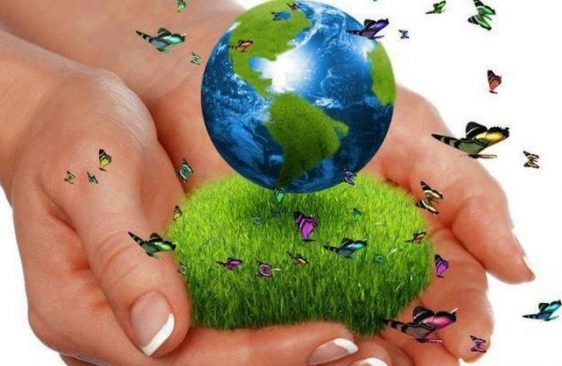

Dia Internacional de la madre tierra 22 de abril


- 


Realizado por:
Dulce Maria Ocotl Xelhua
"4° H"
Especialidad
Programacion
Submodulo:
Desarrolla Aplicaciones Moviles
Docente:
Lic.Jose Antonio Gomez Hernandez
"4° H"
Programacion
Desarrolla Aplicaciones Moviles
Lic.Jose Antonio Gomez Hernandez
Celebramos el dia Internacional de la Madre Tierra para recordar que el planeta y sus ecosistemas nos da la vida y el sustento. Con este dia, sumimos, ademas la responsabilidad colectiva, como nos recordaba la Declaracion de rio de 1992, de fomentar esta armonia con la naturaleza y la Madre Tierra. Este dia nos brinda tambien la oportunidad de concienciar a todo los habitantes del plantel acerca de los problemas que afectan ala tierra y a las diferentes formas de vida que en el se desarrollan.
El Día de la Tierra es un día festivo celebrado en muchos países el 22 de abril. Su promotor, el senador estadounidense Gaylord Nelson, instauró este día para crear una conciencia común a los problemas de la contaminación, la conservación de la biodiversidad y otras preocupaciones ambientales para proteger la Tierra. La primera manifestación tuvo lugar el 22 de abril de 1970, promovida por el senador y activista ambiental Gaylord Nelson, para la creación de una agencia ambiental. En esta convocatoria participaron dos mil universidades, diez mil escuelas primarias y secundarias y centenares de comunidades. La presión social tuvo sus logros y el gobierno de los Estados Unidos creó la Environmental Protection Agency (Agencia de Protección Ambiental) y una serie de leyes destinada a la protección del medio ambiente.
La tierra que habitamos, así titula la Organización de Naciones Unidas (ONU) las actividades para la conmemoración del Día Internacional de la Tierra, este domingo 22 de abril. La Madre Tierra, como la llaman en muchas culturas, enfrenta quizá los años más difíciles desde sus inicios. Este día, menciona el comunicado de la ONU, será para recordar que el planeta y sus ecosistemas nos dan la vida y el sustento.
La ONU informó que este año se celebrará el octavo Diálogo sobre armonía con la naturaleza, el día 23 de abril en la Sede de la ONU de Nueva York. Este diálogo interactivo es una buena plataforma para tratar temas como la producción sostenible y los patrones de consumo en la Armonía con la naturaleza. Asimismo, el diálogo quiere fomentar que los ciudadanos y las sociedades se conciencien sobre cómo se relacionan y cómo pueden relacionarse con el mundo natural; al mismo tiempo, pretende mejorar los cimientos éticos de la relación entre la humanidad y la Tierra, en términos de desarrollo sostenible.
La gestión integrada de paisajes requiere comprender los diferentes impactos del uso de la tierra y equilibrar los intereses a menudo contradictorios de los diferentes grupos involucrados. Imaginemos que usted forma parte del gobierno del país X en África subsahariana. Desea cumplir con el Objetivo de Desarrollo Sostenible No. 1 que reza: “acabar con la pobreza en todas sus formas en todas partes". Sin embargo, es consciente de la necesidad de implementar todos los 17 Objetivos, incluido el Objetivo 15, que busca: "Gestionar sosteniblemente los bosques, luchar contra la desertificación, detener e invertir la degradación de las tierras y detener la pérdida de biodiversidad.” Imagine que usted tiene una gran extensión de pastizales secos donde casi nadie vive y quiere explotarlos de mejor manera, en beneficio de su gente.